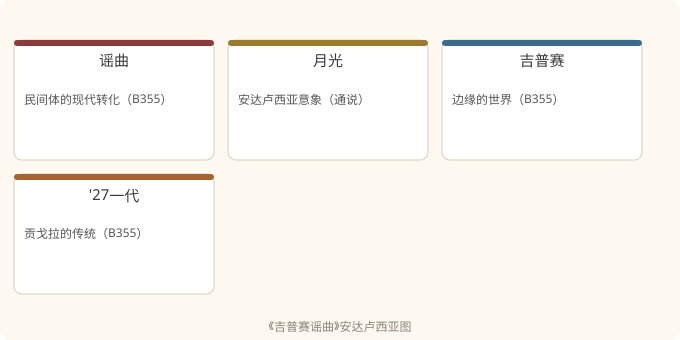

吉普赛谣曲
一、基本信息
| 作者 | 费德里科·加西亚·洛尔卡 |
|---|---|
| 成书/出版 | 1928年（Britannica B355：Romancero gitano——1921-27年写、1928年出版——18首谣曲） Federico Garcia Lorca — Encyclopaedia Britannica（百科全书） |
| 国别/地区 | 西班牙 |
| 时代 | 近代 · 20世纪20年代 |
| 体裁 | 诗集 |
| 语言 | 西班牙语 |

《吉普赛谣曲》安达卢西亚图（主题·结构图）
二、创作背景
Britannica（B355）：18首谣曲——'sold out within a year; many readers mistook Lorca for a Gypsy'（一年内售罄；许多读者误以为洛尔卡是吉普赛人）。
Britannica（B355）：洛尔卡——'the most important Spanish poet and playwright of the 20th century'。
Britannica（B355）：1927年纪念贡戈拉逝世300周年的群体——此后被称为'Generation of 1927'。
三、内容脉络
谣曲体（romance传统）与现代意象的融合：月光、吉普赛、血与刀（B355 语系——具体篇目通说待核）。
《月亮，月亮》等篇目（篇名通说待核——B355未载）。
四、主要人物表
| 人物 | 身份 | 说明 |
|---|---|---|
| 抒情'我' | 谣曲叙述者 | （通说待核） |
五、主题与艺术特点
- 安达卢西亚民间谣曲的现代化（B355 语系）。
- 吉普赛世界的边缘与暴力（B355：读者误认语境）。
- 贡戈拉传统的再创造（B355：Generation of 1927）。
六、影响与评论
- Britannica：一年内售罄——洛尔卡成名（B355）。
Federico Garcia Lorca — Encyclopaedia Britannica（百科全书） - Britannica：'27一代'的确立（B355）。
Federico Garcia Lorca — Encyclopaedia Britannica（百科全书）
七、阅读建议
难点
- 西班牙谣曲格律（romance 八音节体——通说待核）。
- 安达卢西亚意象系统。
- 《吉普赛谣曲》中译本（人民文学/上海译文等——通说待核）。
- 西班牙文原版。
洛尔卡诗歌首选；后接《诗人在纽约》。
八、待核实
- 具体篇目（月/风/普雷希奥萨等）核对（B355未载）。
- 1928年出版（Revista de Occidente说）待核。
- '误认为吉普赛人'细节仅 B355 口径。
本页主要来源
费德里科·加西亚·洛尔卡的其他收录作品：吉普赛谣曲血婚叶尔玛贝尔纳达·阿尔巴的家